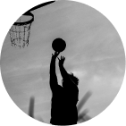
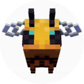
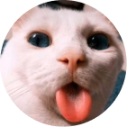
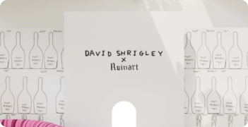
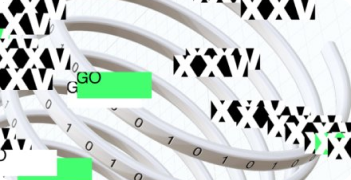
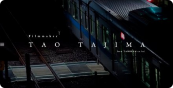

TIMUR
Я — начинающий frontend-разработчик, в настоящее время обучаюсь в АПОУ ИПЭК по специальности «Веб-разработка». Вместе со своей командой я создал этот сайт, чтобы вы узнали о нас больше.

FEDOR
Я — начинающий frontend-разработчик, в настоящее время обучаюсь в АПОУ ИПЭК по специальности «Веб-разработка». Вместе со своей командой я создал этот сайт, чтобы вы узнали о нас больше.

ANDREY
Я — начинающий frontend-разработчик, в настоящее время обучаюсь в АПОУ ИПЭК по специальности «Веб-разработка». Вместе со своей командой я создал этот сайт, чтобы вы узнали о нас больше.
Наша компания была создана тремя друзьями-разработчиками. Мы занимаемся созданием сайтов и приложений, специализируемся на frontend-разработке. Мы постоянно совершенствуем свои навыки и знания, участвуя в семинарах и мастер-классах по веб-разработке, чтобы создавать качественные продукты для наших клиентов. Если вы ищете команду опытных разработчиков, готовых воплотить ваши идеи в жизнь, мы готовы предложить наши услуги. Свяжитесь с нами, чтобы обсудить ваши проекты и требования.

Нетрадиционная Галерея
«Нетрадиционная Галерея» — это инновационное пространство, где представлены произведения искусства, не вписывающиеся в традиционные рамки. Здесь можно увидеть работы современных художников, фотографов, скульпторов и других творцов, которые используют нестандартные техники и материалы. Цель проекта — показать разнообразие современного искусства и предоставить площадку для самовыражения молодых талантов. В галерее будут проводиться выставки, мастер-классы, лекции.

Виртуальный вебби
Платформа «Виртуальный вебби» позволяет пользователям создавать и управлять своими виртуальными мирами. Пользователи смогут выбирать различные параметры, чтобы создать уникальный мир, который будет соответствовать их интересам и предпочтениям. В виртуальных мирах пользователи смогут общаться, играть, проводить исследования. Проект также даёт возможность делиться своими мирами с другими пользователями и получать обратную связь от них. Цель проекта — предоставить пользователям возможность выразить свою творческую индивидуальность и создать уникальное пространство для общения и развлечений.

ТАО ТАДЗИМА
Проект посвящён творчеству известного кинорежиссёра Тао Тадзимы. Он включает ретроспективу фильмов режиссёра, анализ его творческого метода и влияния на современное кино. В рамках проекта будут проведены показы фильмов, организованы встречи с режиссёром и другими представителями киноиндустрии, а также опубликованы статьи и исследования, посвящённые творчеству Тадзимы. Цель проекта — познакомить зрителей с работами режиссёра и способствовать развитию интереса к его творчеству.

